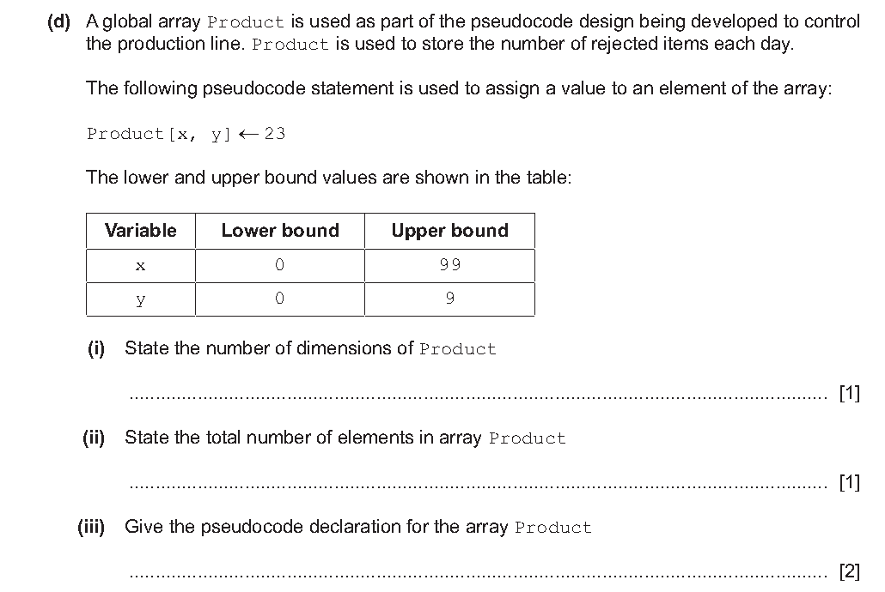
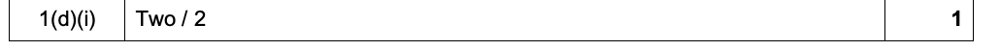
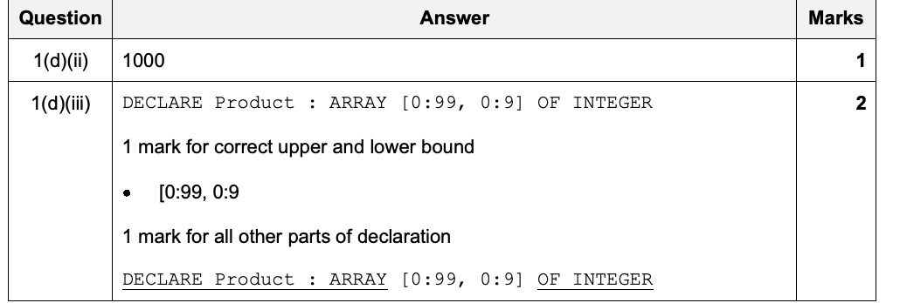

Build a booking system · Concept 15
Locate a seat by row and position
Observe
A room with twelve seats
| Row | Seat 1 | Seat 2 | Seat 3 | Seat 4 |
|---|---|---|---|---|
| 1 | free | free | free | free |
| 2 | free | free | free | free |
| 3 | free | free | free | free |
Look, then discuss
Why is “seat 2” ambiguous when the room has three rows?
A small room has three rows and four seats in each row. Seat position 2 exists in all three rows. Give both the row number and the seat position to identify one seat.
Recall
Recall indices and inclusive bounds
One index selects an element in a one-dimensional array. Each dimension of a two-dimensional array has its own lower and upper bounds. Count each inclusive range separately.
Explain
Explanation · 1 / 3
Give the dimensions a meaning
Use the first index for Row and the second for Seat. Occupied[2, 3] refers to seat 3 in row 2. Declare each element BOOLEAN because each seat is either occupied or not occupied.
Explanation · 2 / 3
Declare both bounds
DECLARE Occupied : ARRAY[1:3, 1:4] OF BOOLEAN defines 3 × 4 = 12 elements. The comma separates dimensions. Both coordinates must be valid for an access to be valid.
DECLARE Occupied : ARRAY[1:3, 1:4] OF BOOLEAN
Occupied[2, 3] <- TRUE
OUTPUT Occupied[2, 3]Explanation · 3 / 3
Compare a grid with a list
A list of participant names needs one position. A seating plan naturally uses two coordinates. A two-dimensional table still has one declared element type; it is not a record with differently typed fields.
Work together
Count a grid with zero-based bounds
A table is declared ARRAY[0:2, 0:3] OF INTEGER.
Work together · 1 / 2
Count each dimension
The first dimension has 2 - 0 + 1 = 3 positions. The second has 3 - 0 + 1 = 4 positions. Total capacity is 3 × 4 = 12.
Work together · 2 / 2
Check two coordinates independently
[2, 3] is valid. [3, 2] is invalid because the first index exceeds 2, even though 3 is permitted in the second dimension.
A two-dimensional element is located by an ordered pair of valid indices.
Check
Try it yourself · Teacher-written
How many elements are in ARRAY[2:4, 5:8], and is [4, 8] valid?
Check your reasoning
There are (4 - 2 + 1) × (8 - 5 + 1) = 3 × 4 = 12 elements. [4, 8] is valid because both indices are within their own inclusive bounds.
Past paper
Attempt the past-paper questions · 4 marks
1 original question · 3 selected parts · 4 marks
Suggested independent working time: 4–8 minutes (teacher estimate).
Answer the original questions first. Open guidance, a teacher solution or the official mark scheme when needed. Only the named parts are assigned; extracts also retain their required shared context.
Original question · Cambridge 9618/22
1. Count array elements using inclusive bounds
Cambridge 9618/22 · May/June 2025 · 1(d)(i), 1(d)(ii), 1(d)(iii) · 4 marks
Selected parts: 1(d)(i) [1]; 1(d)(ii) [1]; 1(d)(iii) [2].

Hint — reading the question
Both dimensions start at zero. Count allowed index values, not the number printed as the upper bound.
Reasoning and model answer — teacher-written
1(d)(i): Two dimensions.
1(d)(ii): (99 − 0 + 1) × (9 − 0 + 1) = 100 × 10 = 1000 elements.
DECLARE Product : ARRAY[0:99, 0:9] OF INTEGEROfficial mark scheme


Why this earns marks — teacher explanation
The first two answers earn one mark each. The declaration has one mark for both correct ranges and one for the remaining declaration syntax and INTEGER type.
Common mistakes — teacher analysis
99 × 9 omits the zero-indexed row and column. Replacing the ranges with 1:100 and 1:10 changes the required indexing even though the element count is the same.
Cambridge past-paper access page ↗ · Source references and page numbers are shown with each extract. © Cambridge University Press & Assessment / UCLES.
Connect
Keep this idea
Declare both ranges, interpret the order of the indices and multiply their lengths for capacity.
Two loops can visit every ordered pair without skipping or repeating a seat.
Continue: Finish the inner loop before moving to the next row →Learning goals
- Select a suitable 1D or 2D array for a given task.
- Write pseudocode to declare and process 1D and 2D arrays.
- Use array terminology correctly.
- Identify an array's indices and lower and upper bounds.